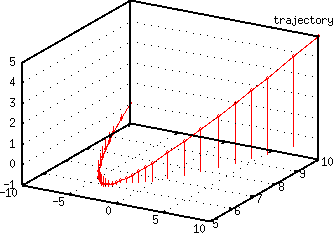
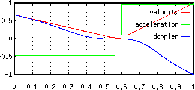
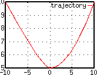
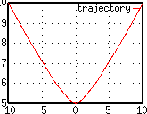
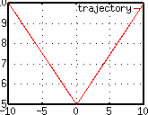
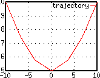
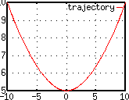

|
Several different techniques can be selected to render the output samples. Each one has advantages and disadvantages and there's no reason not to mix them in a piece. The value of the special variable dlocsig-render-using or the render-using make-dlocsig parameter defines which one is used:
- amplitude-panning [1]
Generates amplitude panning between adyacent speakers. In two-dimensional speaker configurations panning is done between adyacent speakers. Three-dimensional speaker configurations split space in non-overlapping triangles with vertices at the speaker positions. Panning is done within each three speaker group. Transitions between two or three speaker groups define new breakpoints in the trajectory so that the proper speakers reache zero amplitude when transitioning between groups.
- b-format-ambisonics [2]
Generates a four channel first order b-format encoded soundfile (an error will be generated if the current output stream is not four channels). The Ambisonics b-format has four discrete channels with information encoded as follows:
| W | (* signal 0.707) (omnidirectional component) |
| X | (* signal (cos A)(cos B)) |
| Y | (* signal (sin A)(cos B)) |
| Z | (* signal (sin B)) |
A is the counter-clockwise angle of rotation from the front center and B is the angle of elevation above the horizontal plane. Note that our coordinate system is different. The X component is in the direction of our y axis (positive values in front of the listener) and the Y component is in the direction of our -x axis (to the left of the listener).
- decoded-ambisonics [3]
The Ambisonics encoded information is decoded to an arbitrary number of speakers as defined by the currently selected speaker configuration. The decoded channels have higher amplitudes than the equivalent amplitude panning rendering, dlocsig-ambisonics-scaler is used to (approximately) equalize the amplitude. The default value is a quite arbitrary (but seems to do the trick) 0.707.
- stereo-hrtf [4]
Not implemented yet...
|
Global parameters
|
|
The following parameters are global bindings (special variables) that control the global behavior of dlocsig:
dlocsig-one-turn
[number]
360 |
A number that defines the units used to represent angles. By default angles are measured in degrees. Change the variable to represent one turn in the units of interest (for example, setting it to 1.0 will represent angles in turns). |
dlocsig-speed-of-sound
[number]
344 |
A number that defines the units used to represent distances through the value of the speed of sound. The default measures distances in meters. Change the variable to represent the speed of sound in the desired units (ie: (setf dlocsig-speed-of-sound 1128) will enable you to measure all distances in feet).
|
dlocsig-3d
[t|nil]
nil |
A boolean value that defines what speaker configuration will be used for a given number of channels. Speakers can be arranged in two or three-dimensional patterns. Together with the number of channels of the current output stream dlocsig-3d is used to select a configuration.
|
path-3d
[t|nil]
t |
A boolean value that defines how bezier paths are going to be parsed.
|
dlocsig-render-using
[num]
1 |
A number selected from predefined constants that defines which rendering technique will be used. The default is amplitude-panning. Currently available rendering technique constants are: amplitude-panning, b-format-ambisonics, decoded-ambisonics
|
|
|
Speaker configuration
|
|
The following functions are used to arrange speaker configurations in 2 or 3d space. arrange-speakers creates a new configuration for a given number of speakers. The configuration includes the position of the speakers in space, optional delays for some or all speakers and a mapping from speakers to output channels. The configurations are stored in dlocsig-speaker-configs, a special variable that holds a bidimensional array. The first index of the array has dimension 2 and is used to differenciate between 2d and 3d configurations (a given number of speakers can be arranged both in 2d or 3d patterns). The second index is by default of dimension 9 and represent the number of speakers of a given configuration. set-speaker-configuration and get-speaker-configuration can be used to store and retrieve a configuration.
| arrange-speakers | &optional-key
| | (speakers '())
(groups '())
(distances '())
(delays '())
(map '())
|
arrange-speakers returns a speaker configuration structure for a particular number of speakers and associated output channels. It defines the location of all speakers in two or three dimensional space, groups the speakers for panning purposes and optionally adds fixed delays to some speakers and maps individual speakers to output channels.
speakers
[list] |
A list that specifies the location of all speakers in space containing either: sub-lists with azimut and elevation angles (for three dimensional speaker distributions) or just numbers that represent azimut angles (for two dimensional speaker distributions). |
groups
[list] |
A list of lists that describes the grouping of speakers for the purposes of amplitude panning (the signal will be panned between speakers that belong to the same group). Each group can be composed of either two or three speakers and all groups for a given speaker configuration have to have the same length. This parameter can be ommited if the speakers are arranged in a two dimensional configuration (and thus have no elevation angles). Each speaker in a group is represented by an integer that is the zero based index of the speaker in the previously defined speakers list. This is the definition for a simple two dimensional grouping of four speakers:
(arrange-speakers :speakers '((-45 0)(45 0)(135 0)(225 0))
:groups '((0 1)(1 2)(2 3)(3 0)))
|
The elevation angles and the group information can be ommited in this case:
(arrange-speakers :speakers '(-45 45 135 225))
|
This is another example where the same four speakers are rearranged in a 3d pattern:
(arrange-speakers :speakers '((1 -60 0)(1 60 0)(1 180 0)(1 0 90))
:groups '((0 1 3)(1 2 3)(2 0 3)
;; floor
(0 1 2)))
|
All angles are measured by default in degrees, 0 degrees is right in front of the listener and angles increment clockwise. The unit used to represent angles can be changed by setting dlocsig-one-turn to the number that represents one turn in the desired unit (ie: (setf dlocsig-one-turn 1) will enable you to express all angles in fractions of a turn). |
distances
[list] |
A list of relative distances between the listener and all speakers. This parameter can be used to specify relative fixed delays between speakers to compensate for arrangements where not all speakers are equidistant from the listener. Distances are measured in meters by default. This example configuration will add 14.5mSeconds of delay (5 meters at 344m/s) to the two back channels of a four speaker configuration:
(arrange-speakers :speakers '(-45 45 135 225)
:distances '(0 0 5 5)
|
The unit used to represent distances can be changed by setting dlocsig-speed-of-sound to a number that represents the speed of sound in the desired unit (ie: (setf dlocsig-speed-of-sound 1128) will enable you to express all distances in feet). Delays can also be specified directly by using the delays keyword. |
delays
[list] |
A list of relative delays of all speakers. Delays are specified in seconds and must be zero or positive. A fixed delay line of the appropriate length is inserted on all channels that have a non-zero delay. |
map
[list] |
A list that maps the speakers to output channels. Each number of the list defines the zero-based output channel where that speaker will be sent. The following configuration of four speakers will generate a soundfile where left front and back speakers have even channel numbers and right front and back speakers have odd channel numbers:
(arrange-speakers :speakers '(-45 45 135 225)
:map '(0 1 3 2)
|
|
set-speaker-configuration sets a speaker configuration for a particular number of output channels. The argument config must be a configuration structure created by arrange-speakers. The configuration will be stored at the appropriate index in the global configuration array depending on the number of speakers it defines. This example will store a new configuration in the slot corresponding to four output channels:
(set-speaker-configuration (arrange-speakers :speakers '(-45 45 135 225)
:map '(0 1 3 2)
|
get-speaker-configuration retrieves a speaker configuration definition from the global configuration array. The returned configuration will have the number of channels specified by channels and will be either two or three dimensional depending on the value of dlocsig-3d. make-dlocsig uses this function to retrieve the configuration that matches the number of channels of the enveloping with-sound.
|
|
Paths
|
|
Paths are used to describe the trajectory of the moving sound source in space.
Bezier paths are defined by a list of points in 2d or 3d space that the sound source will move through. The bezier path classes will create a curved trajectory that passes through all the specified points and is composed of bezier segments, one segment for each two points in the original description of the path.
The trajectory pictured on the right was created by evaluating the following lisp code:
(make-path
'((-10 10 0 1)(0 5 0 0)(10 10 5 1.5)))
|
All the intermediate points that create the smooth trajectory were rendered from the bezier segments fitted by make-path to the three supplied points.
|
 |
|  |
The fourth optional parameter controls the relative velocity of the movement. In our example the sound source slows down to zero velocity on the second point and reaches the third point at 1.5 times the speed it started it.
These are the corresponding graphs of average velocity, acceleration and doppler shift for each segment of the trajectory.
|
This rendition of the trajectory in terms of a smooth curve is necessary for a perceptually convincing rendition of the doppler frequency effect. A trajectory composed of straigh lines connecting the points would imply a sudden change of the velocity vector at each inflection point. Any such change in the radial velocity component will produce a sudden jump in doppler shift which will translate perceptually in a jump in pitch instead of a jump in doppler shift. This is one way in which the illusion of a moving sound source can be easily destroyed.
| make-path | &optional-key
| | (3d path-3d)
(path '())
(polar nil)
(closed nil)
(curvature nil)
(error 0.01)
(initial-direction '())
(final-direction '())
|
make-path returns a bezier path object that can be used as an argument to the make-dlocsig unit generator creation function.
3d
[t|nil] |
Defines how the path parameter will be parsed. If t the path will be interpreted as containing points in 3d space. If nil it will be interpreted as containing 2d points. The default for 3d is defined by the path-3d special variable (normally t.
|
path
[list] |
A list that contains the points in 2d or 3d space the sound source will have to move through and the optional relative velocity of the source at each of those points. Points can be defined in cartesian (the default) or polar coordinates. To be rendered as a set of bezier segments the path description has to contain at least three points (four points if the path is closed). Paths with only two points will be rendered as a straight line. Paths with only one point define stationary sound sources.
These are the recognized formats for each point if the components of path are lists and 3d is t:
- (x y z v)
- x, y, z are the coordinates of the point, v is a relative velocity value
- (x y z)
- x, y, z are the coordinates of the point, velocity is nil
- (x y)
- x and y are the coordinates of the point, z is 0.0 and velocity is nil
If 3d is nil:
- (x y v)
- x, y are the coordinates, z is 0.0 and v is a relative velocity value
- (x y)
- x and y are the coordinates, z is 0.0 and velocity is nil
This will move the sound source from left to the right and up and the source's velocity will be zero right in front of the listener's position:
(make-path :path '((-10 10 0 1)(0 5 0 0)(10 10 10 1)))
|
polar
[nil|t] |
If polar is t path will be interpreted as a list of points in polar coordinates. The formats recognized are the same except the first coordinate is the distance from the source to the listener, the second is the azimut angle and the third (and optional) is the elevation angle.
|
closed
[nil|t] |
Defines a path as closed. The first and last points of a closed path have to have the same coordinates. Because of limitations in the bezier curve fitting algorithm closed paths have to have at least 4 points.
|
curvature
[number|list] |
The curvature parameter can be used to affect the transitions between consecutive bezier segments. The default value of 1.0 does not change the fitted value of the bezier segment control points. Values above 1.0 will result in more open transitions between segments. Values below 1.0 will create faster transitions between bezier segments. curvature can be a number in which case it will affect all transitions or it can be a list with one component for each pair of points in the trajectory. In this case each component can be a number (both ends of the segment will have the same curvature) or a list with two numbers (each end of the segment can have a different curvature).
The figure on the left was created by (make-path '((-10 10)(0 5)(10 10)) :curvature '(0.4 1)). The first segment of the trajectory changes direction more abruptly than the second that uses the default of 1 for the parameter. The second was created by (make-path '((-10 10)(0 5)(10 10)) :curvature 0.4), now both segments share the same curvature.

:curvature '(0.4 1) |

:curvature 0.4 |
|
error
[number] |
The bezier curves that represent the trajectory are rendered into a straight line representation. This parameter defines the maximum error allowed between the ideal bezier curve and the midpoint of each rendered linear segment.
The following figures illustrate the effect of the error parameter. All figures represent the same path in 2d space '((-10 10)(0 5)(10 10)). The one on the left was created with (make-path '((-10 10)(0 5)(10 10)) :error 3). The error bound is so large that no points are actually interpolated between the three supplied points (even though internally the bezier curve control points were calculated). The one on the center was created with (make-path '((-10 10)(0 5)(10 10)) :error 0.3). Two intermediate points are calculated between each of the three supplied points. The one on the right was created with (make-path '((-10 10)(0 5)(10 10)) :error 0.01) and closely approaches the ideal bezier curve.

:error 3 |

:error 0.3 |

:error 0.01 |
|
initial-direction
[list] |
If the path is not closed this list defines the initial direction of the movement. The list specifies the direction as a vector expressed in x, y, z coordinates. |
final-direction
[list] |
If the path is not closed this list defines the final direction of the movement. The list specifies the direction as a vector expressed in x, y, z coordinates. |
| make-polar-path | &optional-key
| | (3d path-3d)
(path '())
(closed nil)
(curvature nil)
(error 0.01)
(initial-direction '())
(final-direction '())
|
make-polar-path returns a bezier path object that can be used as an argument to the make-dlocsig unit generator creation function. It will automatically parse the trajectory points as being represented in polar coordinates.
| make-closed-path | &optional-key
| | (3d path-3d)
(path '())
(polar nil)
(curvature nil)
(error 0.01)
(initial-direction '())
(final-direction '())
|
make-polar-path returns a bezier path object that can be used as an argument to the make-dlocsig unit generator creation function. It will create a closed path.
Geometric paths are defined by a description of the path in terms of geometry. For now only one type of geometric path has been defined as an extension to 3d of the old spiral-path of the old dlocsig implementation.
| make-spiral-path | &optional-key
| | (start-angle 0d0)
(total-angle nil)
(step-angle (/ dlocsig-one-turn 100))
(turns nil)
(distance '(0 10 1 10))
(height '(0 0 1 0))
(velocity '(0 1 1 1))
|
make-spiral-path returns a spiral trajectory centered around the listener's position.
start-angle
[number] |
The start angle for the spiral. |
total-angle
[number] |
The total angle for the spiral. |
step-angle
[number] |
The step angle that will be used to render the spiral. The default is 1/100 of a turn. |
turns
[number] |
An alternative way of specifying the total angle comprised by the spiral. Mutually exclusive with total-angle |
distance
[envelope] |
Distance from the source to xy = 0,0 expressed as an envelope. |
height
[envelope] |
Height of the source expressed as an envelope. |
velocity
[envelope] |
Relative velocity of the source expressed as an envelope. |
Not written yet...
Ahem, there is no graphical path editor... yet. If your system includes the gnuplot utility you can use the following functions to graphically visualize the path and its properties.
This will plot two views, one containing the trajectory and the other containing overlapping plots of the velocity, acceleration and doppler shift of the moving sound source.
Plots the trajectory of the moving sound source.
Plots the velocity of the moving sound source.
Plots the acceleration of the moving sound source.
Plots the doppler shift of the moving sound source.
|
|
DLOCSIG
|
|
| make-dlocsig | &optional-key
| | (start-time nil)
(duration nil)
(path dlocsig-path)
(scaler dlocsig-scaler)
(direct-power dlocsig-direct-power)
(reverb-power dlocsig-reverb-power)
(inside-radius dlocsig-inside-radius)
(inside-direct-power dlocsig-inside-direct-power)
(inside-reverb-power dlocsig-inside-reverb-power)
(reverb-amount dlocsig-reverb-amount)
(initial-delay dlocsig-initial-delay)
(unity-gain-dist dlocsig-unity-gain-dist)
(minimum-segment-size dlocsig-minimum-segment-size)
(render-using dlocsig-render-using)
|
make-dlocsig creates a dlocsig structure that can be used as parameter to dlocsig in the Run loop. It returns three values, the first one the structure itself, the second the starting absolute sample in the output soundfile and the third the end sample in the output soundfile. A multiple-value-bind can be used to bind to all three values:
(multiple-value-bind (dloc beg end)
(make-dlocsig :start-time start-time
:duration duration
:path path)
...
(run
(loop for i from beg below end do
(dlocsig dloc i sample)))
|
All default values are asigned to special variables named dlocsig-xxx, where xxx stands for the name of the parameter. This enables calls to the instrument to be surrounded by let statements so that local bindings can be established for default parameters. In the following example the first two notes are rendered using amplitude panning between speakers (if the default has not been changed before) and the second two are rendered using ambisonics because they are within the enclosing let that rebinds the special variable dlocsig-render-using:
(with-sound(:channels 8)
(some-instrument 0 1 440 0.1)
(another-instrument 2.33 0.4 880 0.18)
(let* ((dlocsig-render-using decoded-ambisonics))
(some-instrument 2 2.5 1000 0.07)
(some-instrument 4 2.2 1002 0.05)))
|
- Required parameters
- start-time, duration, path
- Optional parameters
- scaler, direct-power, reverb-power, inside-radius, inside-direct-power, inside-reverb-power, reverb-amount, initial-delay, unity-gain-distance, minimum-segment-size, render-using
start-time
[num] |
Start time of the note in the output soundfile. |
duration
[num] |
Duration of the note. Actually this is not going to be the real duration of the note. This is the duration of the note at the moving source's position. Depending on the net change of distance from the source to the listener the actual duration of the note can be shorter (ending distance is less than starting distance) or longer (ending distance longer than starting distance). The doppler effect due to radial movement of the source translates into a sample rate change of the source which directly leads to the change in duration. The actual duration of the note is returned (indirectly) through the second and third values returned by make-dlocsig. Those numbers (absolute starting and ending samples of the note) should be used to control the main iteration loop inside the run macro. |
path
[path] |
A path object that describes the movement of the sound source in space. |
scaler
[num]
1.0 |
Overall amplitude scaler. This number scales the gain envelopes for all output and reverb channels. |
direct-power
[num]
1.5 |
The amplitude of the sound normally decreases as (/ dist) where dist is the distance between the source and the listener. This number can alter the exponent of the denominator so that the law of change becomes (/ (expt dist direct-power). Positive numbers will make the attenuation with distance increase faster than what would be normal. |
reverb-power
[num]
0.5 |
Defines how the amplitude of the signal sent to the reverberator output channels changes in amplitude with distance. |
inside-radius
[num]
1.0 |
Rendering cues are calculated differently when the sound source is inside the sphere delimited by inside-radius (ie: when the sound is somehow "inside" the head of the listener). The exact difference depends on the rendering method used but the general idea is that within that sphere all speakers emit signal which is proportional to the distance to the center of the sphere (the listener's position). |
inside-direct-power
[num]
1.5 |
Within the sphere delimited by inside-radius and when rendering to amplitude panning all speakers output signal proportional to the distance to the listeners position. |
inside-reverb-power
[num]
0.5 |
This number controls the exponent of the attenuation curve for the revererated sound when inside the sphere delimited by inside-radius. |
reverb-amount
[num|env]
0.04 |
How much signal is sent to the reverberator output channel. Can be a number or an envelope. |
initial-delay
[t|nil]
nil |
If set to nil the minumum time delay between the source and the listener is substracted from the delay line. This will reduce but not necessarily eliminate the initial delay from the start of the note at the position of the source and the arrival of the sound at the listener's position. |
unity-gain-distance
[t|nil|num]
nil |
If a number is specified it represents the distance at which dlocsig processes the samples with unity gain. If set to nil the minimum distance between source and listener is used as the unity gain distance. If set to t no amplitude normalization is done and the attenuation will accurately represent the object's distance. |
minimum-segment-size
[num]
1.0 |
Defines the minimum distance between segment breakpoints. If a segment is longer than this distance it is split into smaller segments until the condition is satisfied. Otherwise long segments would not properly render the attenuation versus distance curve (ie: it would be just a linear curve instead of the specified power curve). |
render-using
[num]
1 |
Defines the rendering technique used to generate the output samples. Acceptable values are the following predefined constants: amplitude-panning (1) for speaker group amplitude panning, b-format-ambisonics (2) for four channel ambisonics encoded output and decoded-ambisonics (3) for a multichannel decoding of the ambisonics components. |
Localizes a sample and merges it into the output file at absolute sample number i.
dloc
[dlocs] |
dlocsig structure created with make-dlocsig. |
i
[integer] |
Absolute sample number in the output soundfile, normally the loop counter of the run loop. |
sample
[sample] |
The sample to be localized. |
|
|
Examples
|
|
This is a very simple instrument that dynamically moves a sine wave in space using dlocsig:
(definstrument sinewave (start-time duration freq amp
&key
(amp-env '(0 1 1 1))
(path (make-path :path '(-10 10 0 5 10 10))))
(multiple-value-bind (dloc beg end)
(make-dlocsig :start-time start-time
:duration duration
:path path)
(let* ((osc (make-oscil :frequency freq))
(aenv (make-env :envelope amp-env :scaler amp)))
(run
(loop for i from beg below end do
(dlocsig dloc i (* (env aenv)(oscil osc))))))))
|
Note how the starting and ending samples of the main loop in the run macro are provided by the second and third values returned by make-dlocsig. Other than that this a very simple example. This instrument can be called as follows (in a four channel environment):
(with-sound(:channels 4)
(sinetest 0 1 440 0.5 :path (make-path '((-10 10)(0 5)(10 10)))))
|
This will select the default 2d speaker configuration for four channels (if the default value of dlocsig-3d is not changed to t). The same instrument could be used to render a 3d soundfile for eight channels by calling it with the following parameters:
;; tell the system I want to use the 3d speaker configuration
(setf dlocsig-3d t)
;; render the sound with a 3d path
(with-sound(:channels 8)
(sinetest 0 1 440 0.5 :path (make-path '((-10 10 0)(0 5 10)(10 10 5)))))
|
Existing instruments can be easily converted to use dlocsig:
- add parameters to the definstrument definition. You will need at least one additional parameter to supply the path.
- replace the calculation of the run loop begin and end samples with the second and third values that are returned by make-dlocsig. Use a multiple-value-bind to get them (see the example above) instead of basing the calculation solely on the starting time and duration of the note (which must be supplied to make-dlocsig).
- replace the current output code with a call to dlocsig. Look for either the standard locsig or outa.
dlocsig assumes it receives time-ordered samples from the instrument. It will not work in instruments like grani, a granular synthesis instrument that can randomly splatter samples all over the duration of the note. It will also not work in instruments that generate more than one output channel (ie: dlocsig needs a mono source). In those cases you can use a second instrument which contains dlocsig and a sound-let to hold the rendered sound until it is spatialized. This solution can also be used to spatialize arbitrary instruments when you want to avoid modifying the instrument code (of course, at the expense of having to create the temporary soundfile). Obviously you can also modify your multichannel instrument to use an array of dlocsig structures and spatialize each channel independently!.
Take a look at the move-sound.ins example instrument. The file includes an instrument (move) that can spatialize multichannel soundfiles and a macro (move-sound) that can wrap arbitrary lisp code and will spatialize the resulting soundfile. Before trying the example compile and load dlocsig, move-sound and Bill's fm-violin:
(with-sound(:channels 4 :play nil)
(move-sound (:path (make-path '((-10 10)(0.1 0.1)(10 -10))))
(fm-violin 0 1 440 0.1)
(fm-violin 0.3 2 1020 0.05)))
|
The preceding code fragment will create a temporary soundfile with the output of the two fm-violin notes and then will spatialize it using the supplied path. The body of the macro could be made to generate a multichannel soundfile in which case you would have to supply as many paths as channels are generated (each channel is independently spatialized). This rather pointless example illustrates this. The first call to fm-violin outputs to the left channel of the temporary file and the second to the right channel:
(with-sound(:channels 4 :play nil)
(move-sound (:channels 2
:paths (list (make-path '((-10 10)(0.1 0.1)(10 -10)))
(make-spiral-path :turns 2)))
(fm-violin 0 1 440 0.1 :degree 0)
(fm-violin 0.3 2 1020 0.05 :degree 90)))
|
|
|